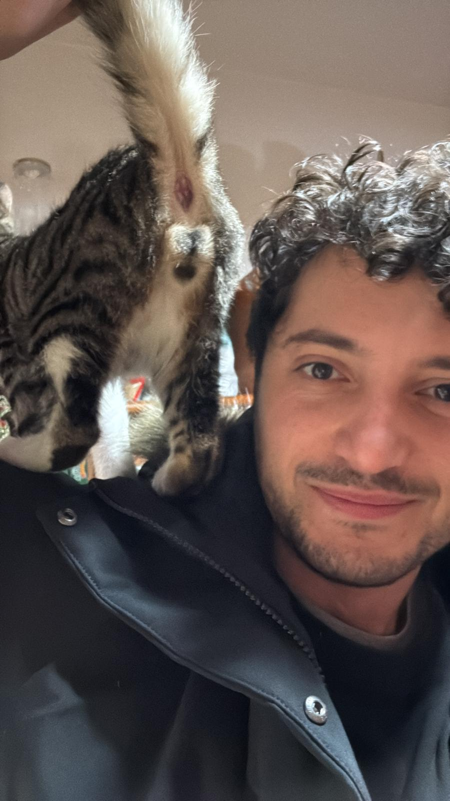

Il chiosco più esclusivo della casa. Aperto solo quando ho fame io.
Il Classico Rubato 3 Grattini
Wurstel sottratto furtivamente dal piatto del Papy mentre guardava altrove. Servito con un pizzico di senso di colpa (vostro, non mio).
Hot Dog Croccante 5 Carezze
Un panino farcito esclusivamente con i miei croccantini premium. Niente salse: rovinano la lucentezza del pelo.
Il "Blep" Dog Gratis
Panino vuoto perché ho già leccato via tutto il ripieno di nascosto. Ma vi farò una linguaccia per compensare.
Acqua della Ciotola (Annata 2026) 1 Grattino
Servita rigorosamente a temperatura ambiente, possibilmente dopo averci pucciato la zampa dentro per controllare se è bagnata.